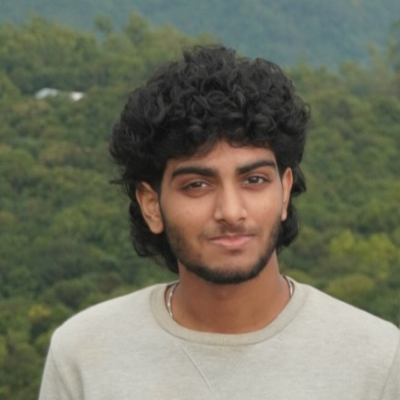

RoleMatch
A casting and film production management platform connecting actors with production teams, with role requirements, applications and rule-based suitability scoring.

BUILDING DIGITAL EXPERIENCES
THROUGH CODE, CREATIVITY & CURIOSITY.
A selection of applications and experiments I've worked on while exploring software development.
A casting and film production management platform connecting actors with production teams, with role requirements, applications and rule-based suitability scoring.
A retrieval-augmented chatbot experiment using custom knowledge bases to retrieve relevant information and generate grounded answers.
A desktop application concept for recording and managing college staff attendance with persistent local database storage.
A web application with donor registration and donor-detail viewing, built with a React frontend and an Express backend.
I'm Dani Rajan Jacob, a Bachelor of Computer Applications student interested in building useful, thoughtful digital products.
I enjoy working across the stack, learning new technologies and turning ideas into practical applications. My current focus is full-stack web development, with a growing interest in AI-powered tools.
DOWNLOAD MY RESUME ↗Marian College Kuttikkanam Autonomous
Current CGPA: 9.42
HAVE A PROJECT, AN IDEA OR AN OPPORTUNITY?